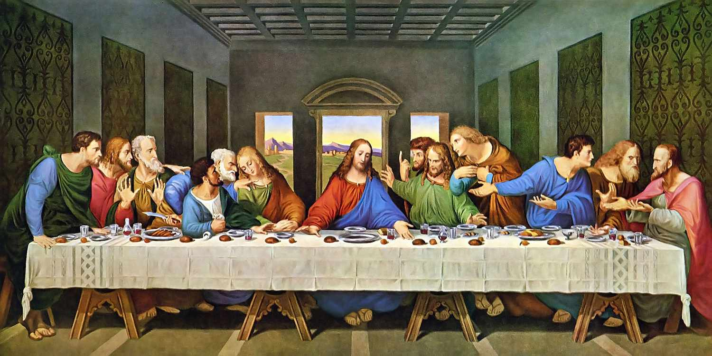
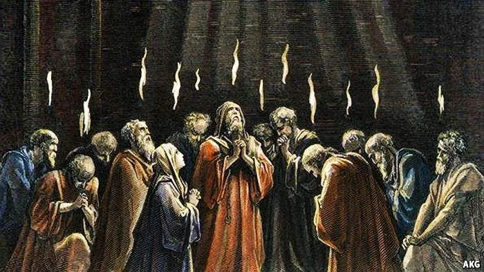
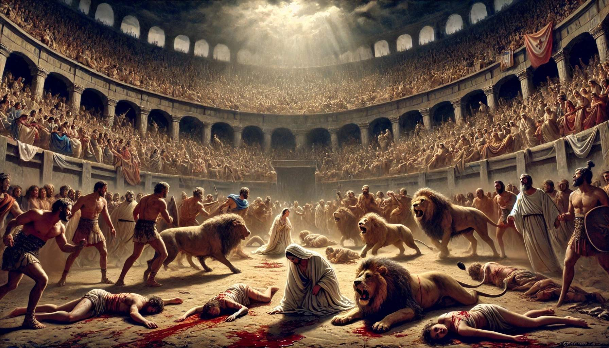
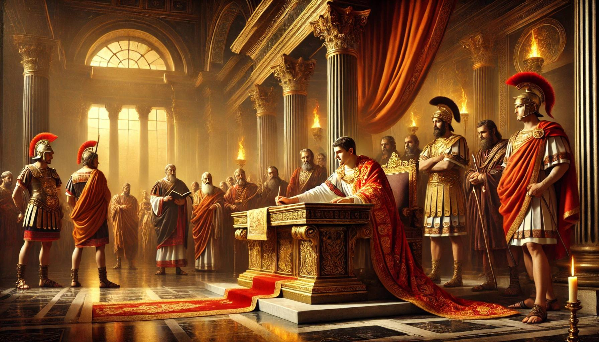
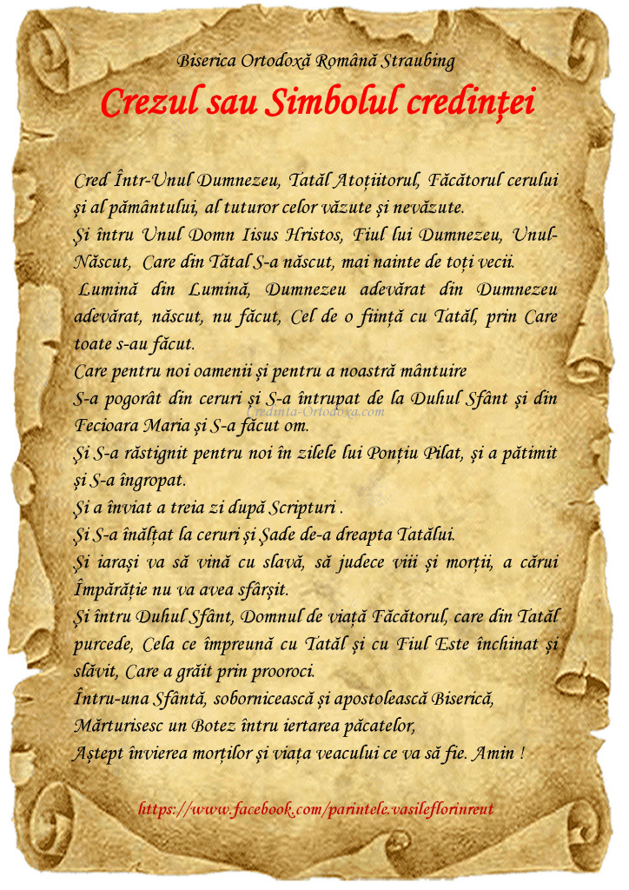
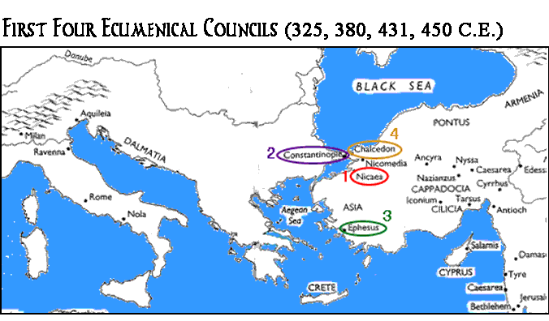
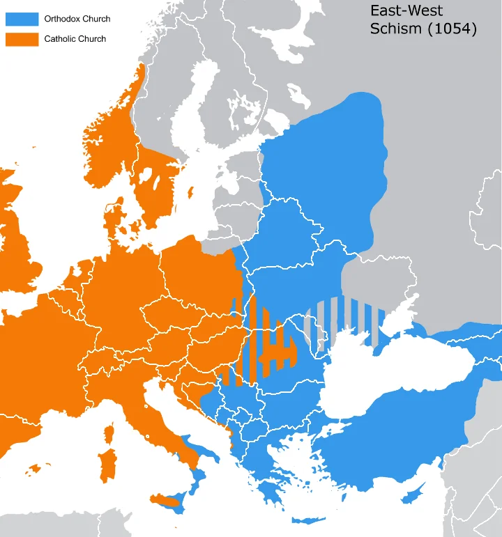
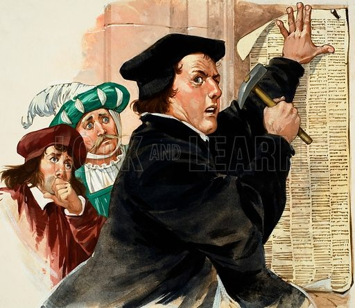
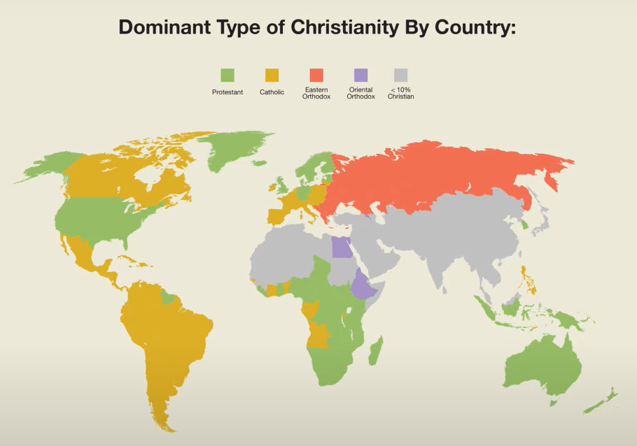

Este anul 30 al erei noastre. Iisus, fiul unui tâmplar din Nazaret
cutreieră cetățile Israelului. În urma Sa, mulțimi de oameni Îl
ascultă, uimiți de învățăturile Sale profunde și de minunile pe care
le săvârșește. Nimeni nu vorbise vreodată ca El. Nimeni mai nu
vindecase atâtea boli și nu înviase morți doar prin cuvânt. Mulți se
întrebau:
Cine este, oare, Acesta?
Marcu 4:41

Iisus predicând mulțimilor în Galileea
În jurul Său, Iisus a adunat doisprezece ucenici simpli – pescari,
vameși, oameni obișnuiți. Le-a spus:
Veniți după Mine și vă voi face pescari de oameni.
Matei 4:19
Aceștia au lăsat totul și L-au urmat, devenind martori ai minunilor,
ai morții și ai Învierii Sale. Ei vor fi primii Apostoli ai
creștinismului, cei care vor duce vestea cea bună (Evanghelia) până
la marginile pământului.

Cei doisprezece Apostoli, primii misionari ai creștinismului
Nașterea Bisericii
După Învierea Sa din morți și Înălțarea la cer, Iisus le-a promis
ucenicilor Săi că le va trimite un Mângâietor, pe Duhul Sfânt.
Această promisiune s-a împlinit în ziua Cincizecimii, când Duhul
Sfânt S-a pogorât asupra Apostolilor în chip de limbi de foc.
Dintr-odată, ei au început să vorbească în limbi diferite, putând
astfel să propovăduiască Evanghelia tuturor popoarelor.

Pogorârea Duhului Sfânt la Cincizecime - nașterea Bisericii
În acea zi, după predica înflăcărată a Sfântului Apostol Petru, trei
mii de oameni s-au botezat, dând naștere primei comunități creștine.
Această zi este considerată ziua de naștere a Bisericii creștine.
Astfel a luat naștere cea mai răspândită religie din lume, care avea
să transforme istoria omenirii în următoarele două milenii.
Primii creștini se adunau în case particulare pentru a se ruga,
pentru a asculta învățăturile Apostolilor și pentru a frânge pâinea
(Sfânta Euharistie). Ei trăiau în comuniune deplină, împărțind toate
bunurile și având:
Un suflet și o inimă.
Fapte 4:32
Răspândirea creștinismului
Urmând porunca Mântuitorului:
Mergând, învățați toate neamurile, botezându-le în numele Tatălui
și al Fiului și al Sfântului Duh.
Matei 28:19
Apostolii au început să propovăduiască Evanghelia în diferite părți
ale lumii. Sfântul Pavel, deși nu a fost dintre cei doisprezece, a
devenit "Apostolul neamurilor", întreprinzând mai multe călătorii
misionare și întemeiind numeroase comunități creștine în Asia Mică,
Grecia și chiar până în Roma.
În ciuda persecuțiilor severe din partea autorităților romane,
creștinismul s-a răspândit cu o viteză uimitoare. Tertulian, un mare
apărător al credinței creștine din secolul al II-lea, afirma că:
Sângele martirilor este sămânța creștinilor.
Tertulian
Într-adevăr, cu cât erau uciși mai mulți creștini, cu atât mai mult
creștea numărul credincioșilor, uimiți de curajul și credința
martirilor.

Martirii creștini în arenele romane, mărturisind credința în
Hristos
Recunoașterea oficială
Punctul de cotitură în istoria creștinismului a venit în anul 313
d.Hr., când împăratul Constantin cel Mare a emis Edictul de la
Milano, prin care creștinismul devenea o religie permisă în Imperiul
Roman. Acest act a pus capăt persecuțiilor și a deschis calea spre
răspândirea largă a creștinismului în întreaga lume romană.

Constantin cel Mare semnând Edictul de la Milano (313 d.Hr.)
Sub patronajul imperial, creștinismul a cunoscut o dezvoltare
rapidă. S-au construit primele biserici publice, s-au organizat
primele Sinoade Ecumenice, iar numeroși misionari creștini au pornit
să răspândească credința în toate colțurile lumii cunoscute.
Învățătura de credință
Creștinismul se bazează pe revelația divină, care este cuprinsă în:
- Sfânta Scriptură (Biblia) - care include Vechiul Testament, comun cu iudaismul, și Noul Testament, care conține scrierile Apostolilor despre viața și învățăturile lui Iisus Hristos
- Sfânta Tradiție - totalitatea adevărurilor revelate care nu se cuprind în Sfânta Scriptură, fiind predate oral de către Mântuitorul și Sfinții Apostoli
Dogmele fundamentale ale creștinismului sunt cuprinse în Simbolul
Credinței (Crezul), formulat la primele două Sinoade Ecumenice
(Niceea - 325 și Constantinopol - 381). Printre cele mai importante
învățături se numără:
- Dogma Sfintei Treimi - Dumnezeu este Unul în Ființă și întreit în Persoane: Tatăl, Fiul și Sfântul Duh;
- Iisus Hristos este Fiul lui Dumnezeu întrupat, Dumnezeu desăvârșit și Om desăvârșit;
- Prin întruparea, moartea și Învierea Sa, Hristos a realizat mântuirea omului de sub păcatul strămoșesc;
- Fecioara Maria este Născătoare de Dumnezeu, rămânând fecioară și după naștere;
- Biserica este instituția sfântă, divino-umană, întemeiată de Hristos pentru mântuirea oamenilor;
- Taina Sfântului Botez este "ușa" de intrare în creștinism;
- La sfârșitul veacurilor va avea loc Învierea morților și Judecata de Apoi;

Simbolul Credinței (Crezul) - sinteza învățăturii creștine
Sinoade Ecumenice
Pe măsură ce creștinismul s-a răspândit, au apărut diverse
interpretări ale învățăturii lui Hristos, unele eretice. Pentru a
clarifica și formula corect dogmele creștine, s-au organizat șapte
Sinoade Ecumenice, care au definit temeiurile credinței creștine
ortodoxe:
- Sinodul I Ecumenic de la Niceea (325) - a formulat dogma despre dumnezeirea Fiului și egalitatea Lui cu Tatăl, combătând erezia ariană
- Sinodul al II-lea Ecumenic de la Constantinopol (381) - a formulat dogma despre dumnezeirea Duhului Sfânt și egalitatea Lui cu Tatăl și cu Fiul
- Sinodul al III-lea Ecumenic de la Efes (431) - a stabilit că în Hristos sunt două firi, dar o singură Persoană, și a clarificat cinstirea Maicii Domnului ca Născătoare de Dumnezeu
- Sinodul al IV-lea Ecumenic de la Calcedon (451) - a proclamat că Iisus Hristos este Fiul lui Dumnezeu, Dumnezeu adevărat și Om adevărat
- Sinoadele al V-lea și al VI-lea Ecumenice de la Constantinopol (553 și 680-681) - au reconfirmat învățătura despre cele două firi și două voințe în Hristos
- Sinodul al VII-lea Ecumenic de la Niceea (787) - a confirmat credința în Sfintele Icoane, combătând erezia iconoclastă

Primul Sinod Ecumenic de la Niceea (325 d.Hr.)
Marea Schismă
Din motive doctrinare, politice, culturale și lingvistice, în anul
1054 s-a produs o ruptură între Biserica Răsăritului (Ortodoxă) și
Biserica Apusului (Catolică). Acest eveniment, cunoscut ca Marea
Schismă, a marcat prima mare divizare în sânul creștinismului.

Împărțirea Bisericii după Marea Schismă din 1054
Diferențele principale între cele două Biserici includeau:
- Adaosul "Filioque" la Simbolul Credinței (catolicii susținând că Duhul Sfânt purcede și de la Fiul, nu doar de la Tatăl)
- Primatul papal (Biserica Catolică susținea autoritatea supremă a Papei de la Roma)
- Diferențe în practica liturgică și viața monahală
Au existat mai multe încercări de reconciliere între cele două
Biserici de-a lungul istoriei, dar unitatea deplină nu a fost
restabilită până în prezent.
Reforma Protestantă
O a doua mare divizare în sânul creștinismului a avut loc în secolul
al XVI-lea, când Martin Luther, un călugăr și profesor de teologie
german, a inițiat mișcarea cunoscută ca Reforma Protestantă. În
1517, Luther a afișat cele 95 de teze pe ușa Bisericii din
Wittenberg, protestând împotriva unor practici ale Bisericii
Catolice, precum vânzarea indulgențelor.

Martin Luther afișând cele 95 de teze pe ușa Bisericii din
Wittenberg (1517)
Reforma a fost continuată de personalități precum Ulrich Zwingli,
Jean Calvin și Henric al VIII-lea al Angliei. Principalele
caracteristici ale protestantismului includeau:
- „Sola Scriptura” (doar Scriptura) - respingerea Tradiției și a autorității bisericești
- „Sola Fide” (doar credința) - mântuirea doar prin credință, nu prin fapte
- Respingerea autorității papale
- Simplificarea cultului și respingerea majorității Tainelor
În urma Reformei, din Biserica Catolică s-au desprins Bisericile
protestante: luterană, calvină (reformată), anglicană și unitariană.
Mai târziu, din acestea au derivat Bisericile neo-protestante:
baptistă, adventistă, penticostală, evanghelică și altele.
Contrareforma și Uniația
Ca răspuns la Reforma Protestantă, Biserica Romano-Catolică a
inițiat o mișcare numită Contrareformă, care urmărea menținerea
unității în cadrul Bisericii. Printre măsurile adoptate se numărau:
- Intensificarea propagandei religioase
- Înființarea de școli și universități religioase
- Crearea Ordinului Iezuiților
- Interzicerea anumitor cărți considerate eretice
- Amplificarea activităților caritabile
În acest context, Biserica Catolică a încercat să atragă și
comunități ortodoxe, în special în Europa de Est. Astfel au apărut
Bisericile Greco-Catolice sau Unite cu Roma, care păstrau ritul
oriental, dar recunoșteau autoritatea Papei.
Creștinismul în lumea contemporană
În zilele noastre, creștinismul rămâne cea mai răspândită religie
din lume, având aproximativ 2,4 miliarde de adepți. Cu toate
acestea, este divizat în numeroase confesiuni și denominațiuni.

Răspândirea creștinismului în lumea contemporană
În dorința de refacere a unității Bisericii primare, în secolul XX
s-a constituit Consiliul Ecumenic al Bisericilor, un organism care
promovează dialogul și cooperarea între diferitele confesiuni
creștine.
Creștinismul continuă să joace un rol important în cultura, arta,
etica și viața socială a multor societăți. Valorile creștine precum
iubirea aproapelui, milostenia, iertarea și respectul pentru
demnitatea umană au influențat profund civilizația occidentală și nu
numai.
Mesajul central al creștinismului - vestea bună a mântuirii prin
Iisus Hristos - continuă să răsune în întreaga lume, oferind
speranță și sens vieții a miliarde de oameni.
Eu sunt Calea, Adevărul și Viața. Nimeni nu vine la Tatăl decât
prin Mine.
Ioan 14:6